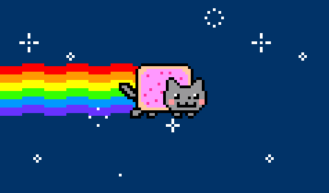

THE IMPORTANT LESSONS IN MY LIFE

After finishing SPM in the year 2018, i decided to find some work to do because there are so many times available while waiting for the examination result. The first initiave i take is try to applying to one of the famous fast food restaurant, that is KFC. However, the first try did not end successfully. In next try, i decided to try applying to one of the nearby stationery store. I manage to get the job as the store keeper. On my first day working, there are some problems that i can not avoid that is the communication barriers. I was an introvert person and i rarely talks with people i do not know. However, in a few days, i managed to overcome my problems by trying to communicating and socializing with the other workers of the store. Day by day, i was able to get myself to talk, even to the people that i do not know. It help to improve my social skills and communication level